Healthcare is the day job and the flagship work — but AugustInnovations builds for love as well as for a living. This is where the rest of the catalog lives: an AI tattoo design studio, a tactics RPG years in the making, a popping game for the smallest hands, a tower defense that will test yours, and eight new games in development that you can play in the browser today.
Creative tools
A professional tattoo design studio, powered by AI — live at inkspireai.xyz.
Generate stunning tattoo designs in seconds, turn them into clean, ready-to-use stencils, and refine them with real-time collaboration tools. Inkspire brings the AugustInnovations AI toolkit to artists and studios: multiple AI models behind one studio workflow, built for the way tattoo work actually happens.
Games
A tactics RPG in the classic grid-battle tradition, built and published by AugustInnovations LLC.
An isometric campaign of turn-based grid battles: position your party, master a deep job system, and carry your progress in persistent saves. Elderon is a complete, hand-built strategy RPG — no ads, no data collection, just the game.
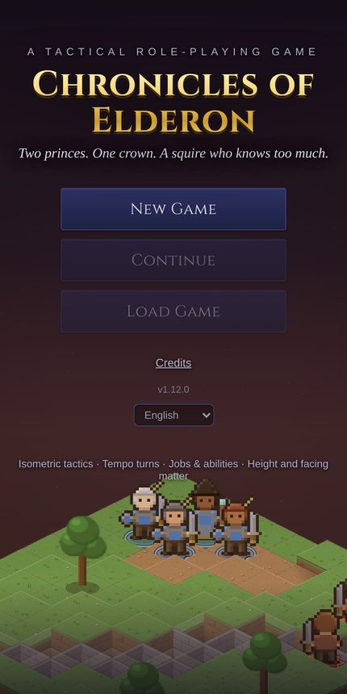
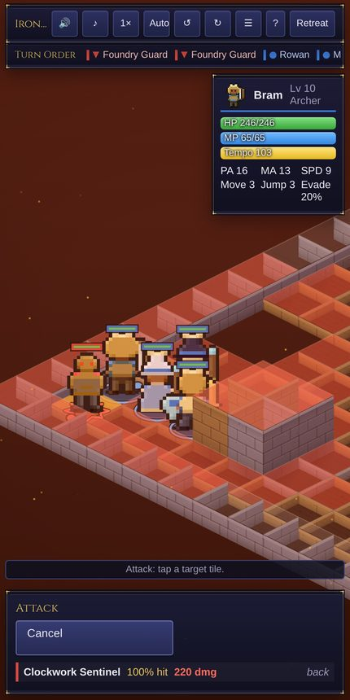
A bright, ad-free popping game made for little kids — and the parents who hand them the phone.
Tap or swipe to pop bubbles, balloons and stars as they float through a sunny sky, under the sea, and across a starry night. Every bubble carries a friendly animal face with its own sound — frogs croak, ducks quack, cows moo, owls hoot. There are no wrong answers, no timers, and no losing.
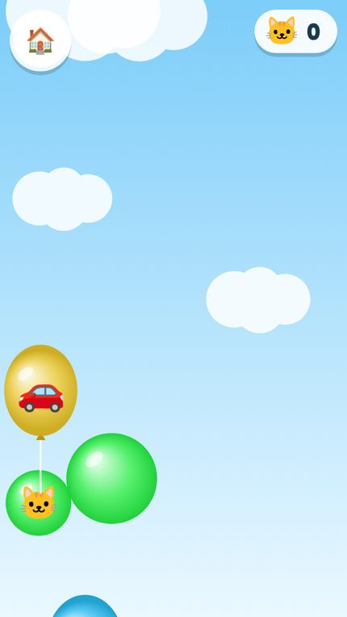
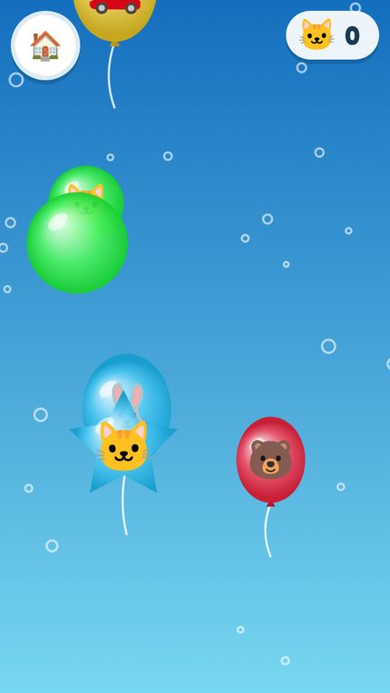
Build towers, hold the line, and survive forty waves across three maps.
A complete tower defense campaign: three maps with progressive unlocks, five tower types with three upgrade levels each — archer, cannon, frost, tesla, and flame — and seven enemy types, including flying and armored units, with boss waves every ten and an endless mode beyond.
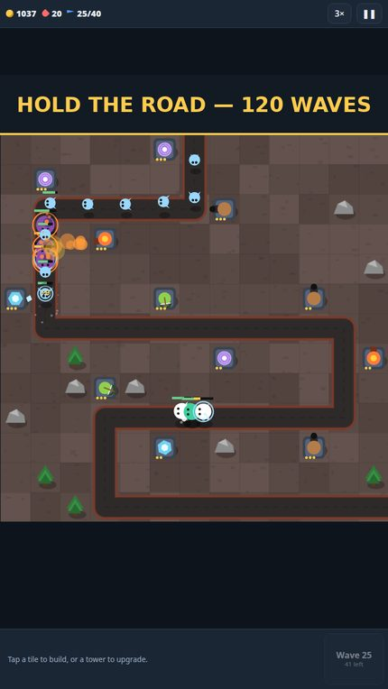
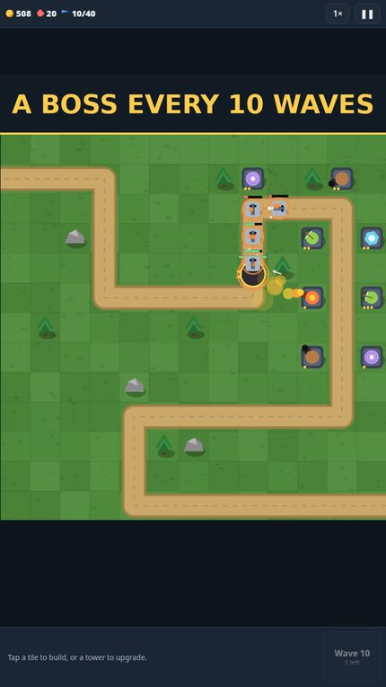
New games
Eight new games from the AugustInnovations studio, built to one standard: offline, no ads, no accounts, and portrait, one-handed play with large-text and high-contrast options. Early builds of all eight are playable in the browser today; Google Play editions are still in development.
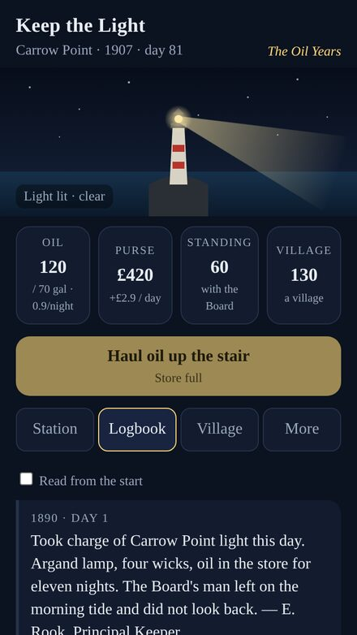
A lighthouse keeper's incremental that ends. Take charge of one lighthouse in 1890 and keep it lit for a century: oil, then paraffin, then electricity, while a village grows around your light. Four generations of keepers write the logbook through storms, fog and war, and the century closes on one of three endings.
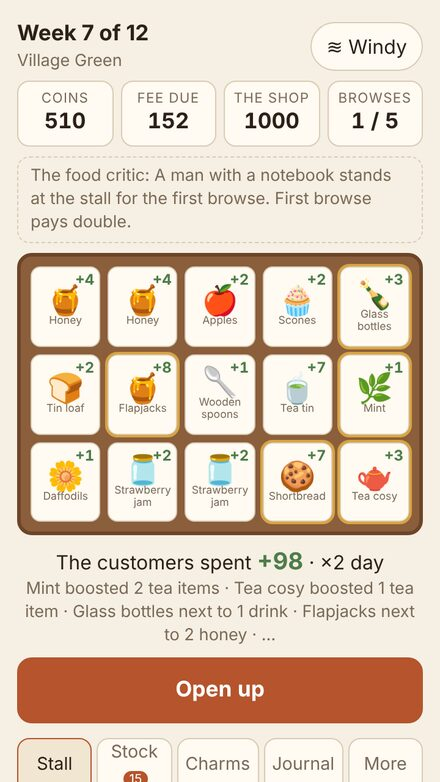
A cozy market-stall builder. Stock a trestle table from the wholesaler, lay it out, and let the customers browse. What sits next to what decides what they spend: 120 items, 80 charms and a journal of every combo you find. Pay the climbing stall fee and buy the shop on the square before the twelfth Saturday.
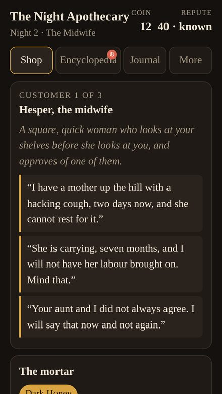
Diagnose by description. Inherit a midnight apothecary in a plague-quiet town. Customers describe their symptoms in plain words; you read the encyclopedia, compound a remedy from forty ingredients, or refuse. Thirty authored nights, one branching story and three endings, every diagnosis provable from the pages.
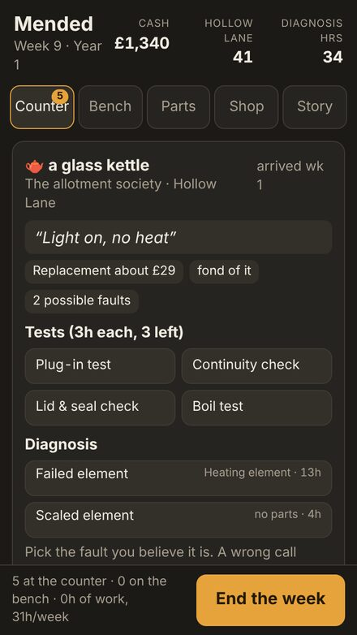
Run a neighbourhood repair café. Kettles, radios, bikes and sewing machines come through the door. Choose the tests, name the fault, quote against the price of a new one, order parts and train apprentices. Eight trades, 79 faults and three years on Hollow Lane.
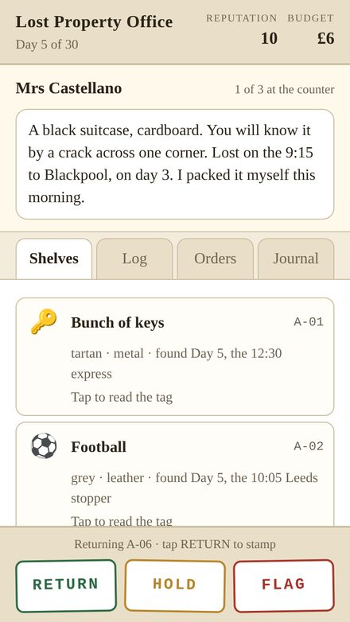
A cozy deduction game about lost things. Work the counter at a railway lost-property office. Travellers describe what they lost from memory, badly; check the claim against the shelves, the log and the Standing Orders, then stamp RETURN, HOLD or FLAG. A thirty-day season with a lost wedding ring at its heart.
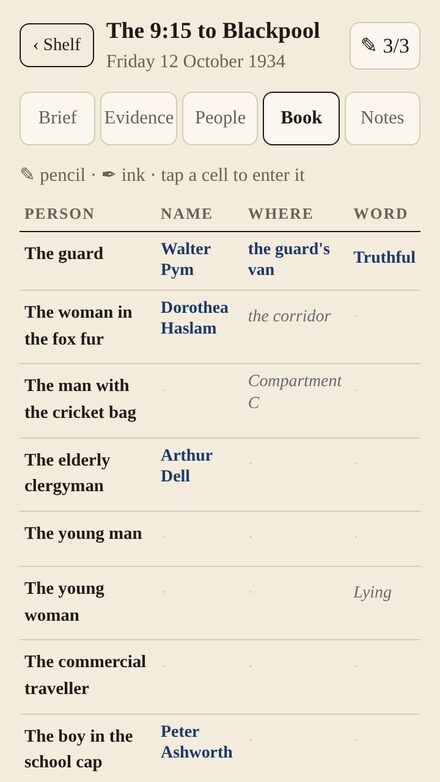
Casebook deduction. Six closed cases built from manifests, timetables, ticket stubs and interviews. Work out who each person is, where they were and whether they can be trusted. Entries take ink only three at a time, and only when all three are right. One culprit runs through all six.
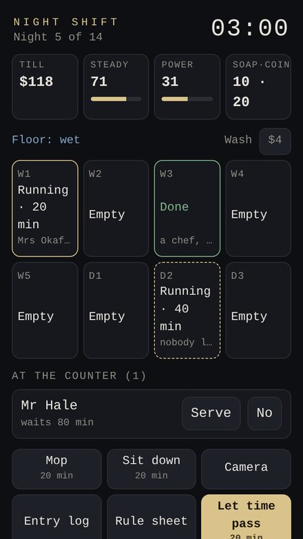
Run the night shift. Follow the rules. Fourteen nights alone at a 24-hour laundromat where the regulars are a little off. Keep eight machines turning and follow the rule sheet, which gains a rule every night. Dread comes from the systems, not jump scares, and the fortnight ends on one of six endings. Made for older teens and adults.
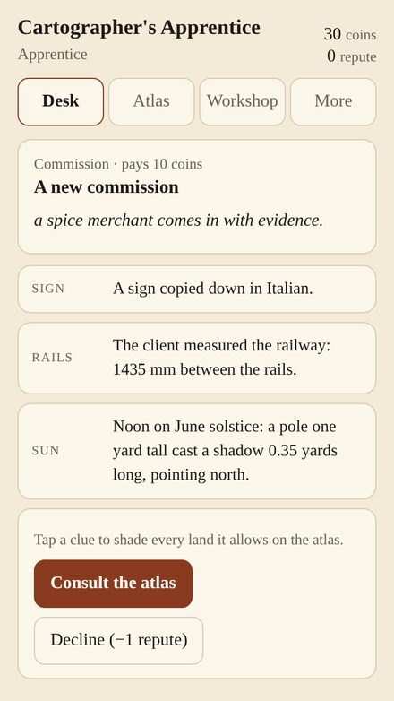
A geography deduction game. Clients bring fragments of the world: a coastline, a sign, a railway gauge, a shadow at noon. Take them to the atlas and find the one place they all fit. 151 lands, five ranks from Apprentice to Master, and expeditions to plot under budget.
More non-medical software is in development and will live on this page as it ships.
Elderon support
Bug reports, feedback, and Google Play edition questions — send us a message and we'll reply by email.